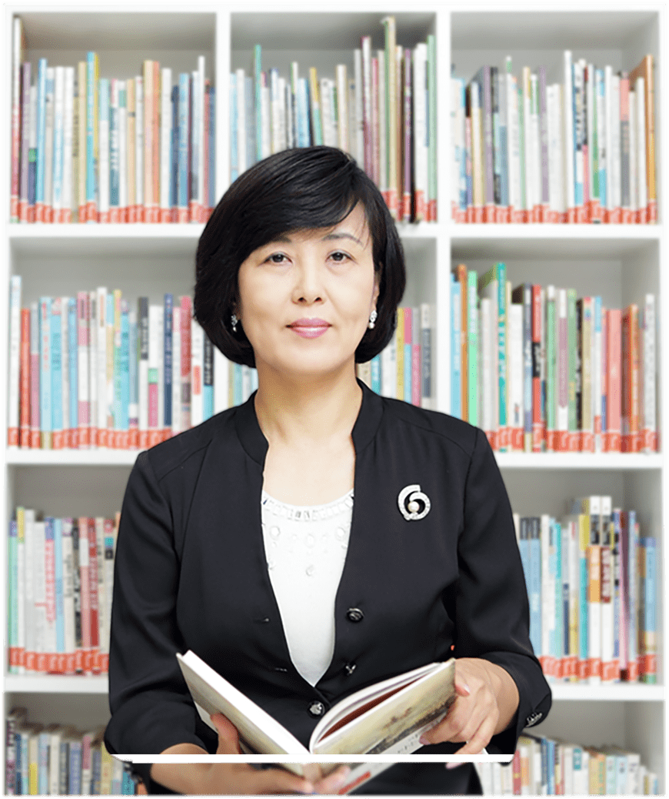

열정의 바구니, 행복의 열매
한우리 독서문화 운동본부는 1989년에 ‘범국민 독서 생활화 운동을 전개하여 도덕적으로 성숙한 교양인을 기르고 합리적으로 사고하는 민주시민의식을 길러 창조적 문화선진국 건설에 이바지한다.’는 이념 아래 창설되어 책 읽는 국민, 성숙한 사회를 만들기 위한 일에 앞장서 왔습니다.
한우리 독서문화운동본부 부설 평생교육원은 이런 한우리의 설립 취지에 부응하여 독서지도사 양성과정을 비롯한 양질의 독서 문화 교육 프로그램을 개발하여 성공적인 운영을 하고 있습니다. 내 자녀의 독서지도를 위하여, 교사로서의 꿈을 위하여 서로 다른 목마름의 동기로 한우리 평생교육원을 찾으신 많은 분들이 좀 더 빨리 이 강의를 듣지 않은 것이 후회가 된다는 말씀을 남기실 때면 저희 임직원과 강사들은 말로 표현할 수 없는 긍지와 보람을 느낍니다.
한우리 독서문화운동본부 부설 평생교육원은 이런 한우리의 설립 취지에 부응하여 독서지도사 양성과정을 비롯한 양질의 독서 문화 교육 프로그램을 개발하여 성공적인 운영을 하고 있습니다.
내 자녀의 독서지도를 위하여, 교사로서의 꿈을 위하여 서로 다른 목마름의 동기로 한우리 평생교육원을 찾으신 많은 분들이 좀 더 빨리 이 강의를 듣지 않은 것이 후회가 된다는 말씀을 남기실 때면 저희 임직원과 강사들은 말로 표현할 수 없는 긍지와 보람을 느낍니다.
프랑스의 사상가 볼테르는 ‘아무리 유익한 책이라도 그 가치의 절반은 독자가 창조한다.’고 했다지요. 독자가 좋은 책을 만나기를 원하는 것처럼 책도 좋은 독자를 만나야 하는 까닭입니다. 저희 한우리 평생교육원은 한 권의 좋은 책이 되도록 노력하겠습니다. 여러분은 오셔서 좋은 독자가 되어 주십시오.
독서를 통해 얻은 깨달음이나 감동을 다른 사람과 나누고, 정리해서 글을 쓰는 활동을 통해 인간은 지적 충만함과 삶의 지혜를 얻게 됩니다. 그러나 손바닥 안의 작은 기계에 잠 시라도 눈을 떼지 못하는 사람들이 점점 늘고 있는 안타까운 현실입니다. 물론 책 한 권 더 읽는다고 당장 삶이 바뀌지는 않습니다. 그러나 세상을 살면서 우리 안에 꽁꽁 얼어버린 바다를 깨뜨려 버리는 도끼 같은 책 한 권은 만나봐야 하지 않을까요?
한우리 평생교육원은 최상의 프로그램과 훌륭한 강사진으로 여러분의 평생교육 동반자가 되어드리겠습니다. 여러분이 안고 오시는 열정이란 바구니 속에 행복이란 열매를 가득 담아 가실 수 있도록 준비하고 기다리겠습니다.
마지막으로 전국 각처에서 독서 교육을 통하여 아름다운 삶 가꾸기를 실천하고 계시는 한우리 독서지도사 선생님들께 한없는 경의와 감사를 표합니다.
한우리 평생교육원장 정은주